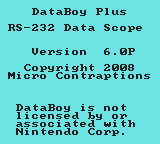

Startup Page

This screen appears after power-on and persists for five seconds unless a key is pressed. The next screen will be the Main Menu.
Note: this screenshot was made using the NO$GMB Game Boy emulator.